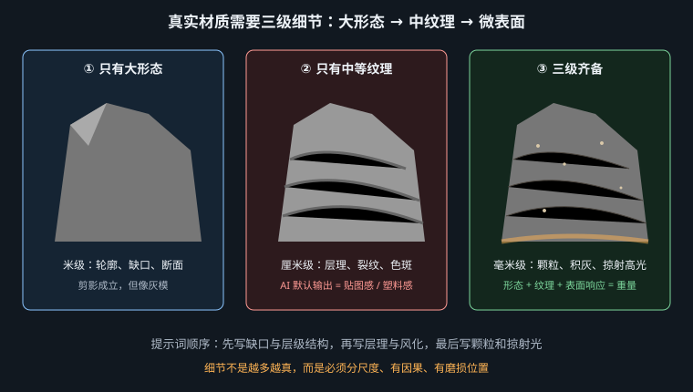
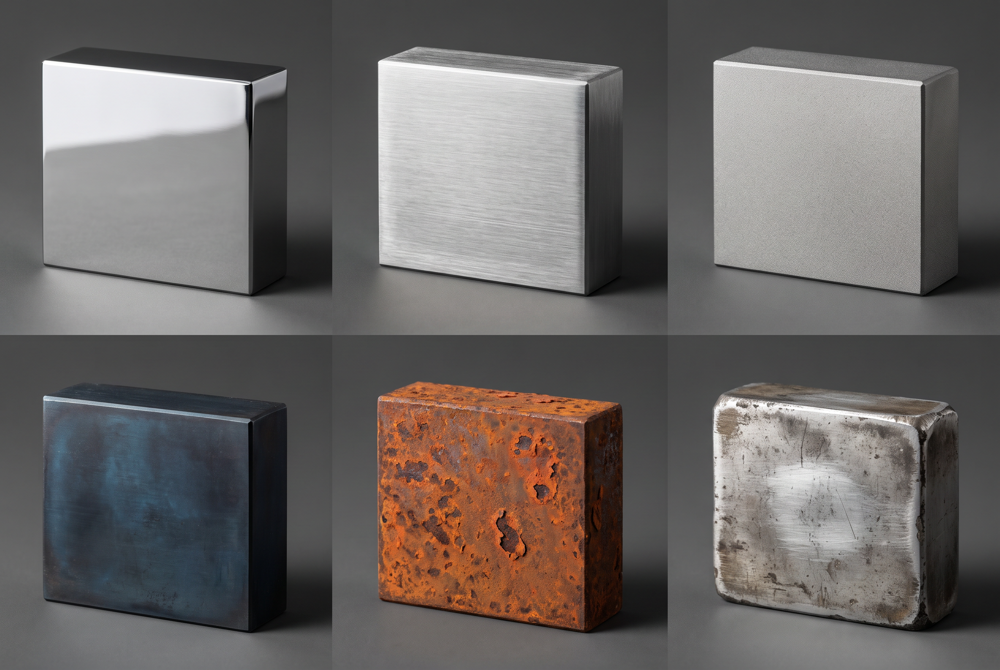

让 AI 画的石头有重量、金属有分量、器物有故事——靠的是细节层级与磨损叙事，不是形容词
先做一个思想实验：一块不锈钢，切成六份，做六种表面处理。它们的基色相同、金属度相同，唯一变化的是粗糙度的值与分布——但成像结果差别大到不像同一种东西。这是理解第 6 章参数表最好的练习。
| 处理 | 物理变化 | 成像特征 | 提示词 |
|---|---|---|---|
| 抛光 polished | 粗糙度趋近 0，各向同性 | 清晰镜像，能读出环境内容；明暗反差极大 | mirror-polished steel reflecting the surrounding environment, sharp bright-to-black transitions |
| 拉丝 brushed | 平行微沟槽 → 各向异性 | 高光被拉成与纹路垂直的条带，环境反射被"抹开" | brushed stainless steel, anisotropic streak highlights running along the horizontal grain |
| 喷砂 bead-blasted | 粗糙度均匀升到 0.6 左右 | 无可辨高光，只剩柔和的整体提亮；最接近"金属哑光" | bead-blasted matte metal, diffuse silver-grey sheen, no distinct reflections |
| 氧化 patina | 表面生成氧化层 → 不再是金属，变成电介质 | 出现漫反射颜色（铜绿、铁黑），高光变白变弱 | oxidised copper with mottled verdigris patina, matte dielectric surface over metallic edges |
| 锈蚀 rusted | 金属度成为混合值：锈斑处为 0，未锈处为 1 | 斑驳——亮反射与粉状锈斑在同一表面共存 | rusted iron, flaking orange rust breaking through to bare metal underneath, mixed matte and reflective patches |
| 做旧 aged | 棱边磨亮（粗糙度局部降低），凹处积垢（局部升高） | 粗糙度沿几何分布，是"用过"的证据 | aged brass, worn bright along the raised edges, dark tarnish settled into the recesses |
前五种是"一种材质"，第六种是"一段历史"。
做旧的本质是粗糙度不再均匀，而是按几何形态分布：凸起被摩擦得更光滑，凹陷被灰尘填得更粗糙。这个分布规律在渲染里叫 curvature-based mask（Substance Painter 的智能材质核心就是它），在美术上叫"结构色/污渍逻辑"。
你只要在提示词里写清楚"哪里亮、哪里脏"，画面立刻从"渲染练习"变成"真实存在过的物件"。这是本章最高性价比的一招。
石头之所以难写，是因为大部分人只写颜色（"灰色的石头"）。但辨认岩石靠的是三件事：晶粒有多大、内部结构往哪个方向走、表面被时间做了什么。
| 岩石 | 颗粒与结构 | 关键特征 | 提示词 |
|---|---|---|---|
| 花岗岩 | 粗晶粒，肉眼可见黑白粉三色矿物斑点 | 随机点状杂色，无方向性；抛光后有小面积闪光（云母） | coarse-grained granite with speckled black and pink mineral crystals, tiny mica flecks catching the light |
| 大理石 | 细晶粒 + 方解石有明显 SSS | 光透进表层几毫米再散出 → 特有的"内部发光"；脉络走向连续 | white marble with subsurface scattering giving the surface an inner glow, grey veining flowing across the form |
| 玄武岩 | 极细晶粒 + 气孔 | 深黑、极哑光（吸光）、布满小孔洞，孔洞内是硬阴影 | dark basalt, extremely matte and light-absorbing, pitted with small vesicles casting hard tiny shadows |
| 砂岩 | 沉积颗粒 + 水平层理 | 方向性极强的横向条带；表面呈砂糖质感，边缘易崩 | sandstone with horizontal sedimentary bedding layers, sugary granular surface, crumbling weathered edges |
| 板岩 | 片状解理 | 沿一个方向劈开，断面呈平整薄片与锐利台阶；微弱丝绢光泽 | slate splitting along flat cleavage planes, sharp stepped edges, faint silky sheen on the fresh break |
风化是给石头加时间的手段，而且它有方向：雨水顺重力向下冲刷，苔藓长在背阴与积水处，风蚀发生在迎风面。写 weathered 是无信息的，写 dark water-streaking running down the north face, moss in the sheltered crevices 才是。
这一节是本章的技术核心，也是最容易迁移到所有材质上的一条方法。
真实表面的细节在三个数量级上同时存在：
AI 的默认输出几乎总是只给第二级。原因不难理解：训练集里的 caption 大量描述的是"木纹桌子""砖墙"这种中等尺度的材质名词，而第一级藏在构图里、第三级藏在像素里，很少被写进文字。模型学到的是"材质 = 一种花纹"。
只有中间一级会怎样？大形态完美无缺、微观完全干净——这正是注塑塑料件的定义。所以"AI 味"里的塑料感不是渲染问题，是细节层级缺失问题。
写任何硬质材质时，按这个顺序各补一句，一句都不要省：
[大形态] a chipped corner and one deep crack running down the left side,
[中等纹理] coarse granular stone texture with horizontal bedding lines,
[微观颗粒] fine dust and micro-pits catching the raking light,
individual sand grains visible at the broken edge
第三句里的 catching the raking light 是关键——微观细节只有在掠射光下才可见（正面光会把它们全部照平）。所以三级细节和下一节的光照配方是一件事的两面。

"朴真"在提示词里最容易写空。rustic、handmade、natural 这类词的信息量接近于零。要写实，得知道手作痕迹在物理上留下了什么。
侘寂（wabi-sabi）作为日本美学概念，落到画面上可以拆成三条互相独立、都能写进提示词的判据：
| 特征 | 画面表现 | 提示词 |
|---|---|---|
| 不完美 | 器形有偏差，釉面有缩釉、气孔、色斑 | slightly uneven rim, glaze pooling irregularly with pinholes and bare patches |
| 不对称 | 拒绝几何中心与规整重复，重心偏移 | asymmetrical silhouette, deliberately off-centre form |
| 时间痕迹 | 包浆、磨损、开片、褪色、修补 | crazed glaze surface, dark patina worn into the handle, an old repaired chip |
另加一条布光判据：侘寂几乎总是配单一柔和的自然侧光 + 大片阴影（谷崎润一郎《阴翳礼赞》里说的那种"在幽暗中显形"的审美）。用棚拍那种四面均匀的商业光，无论器物多朴素，出来都是产品图不是侘寂。
这一节是给游戏与影视概念设计的读者的。磨损不只是让材质变真，它携带信息——观众会无意识地从磨损位置反推使用方式。这是道具设计里最经济的叙事手段：不用一句台词，一把刀就能说清它被谁用了多久。
| 磨损位置 | 物理成因 | 观众读到的信息 |
|---|---|---|
| 握持处磨光、变深 | 手汗与摩擦，粗糙度降低 | 被同一个人长期握着——有主人 |
| 棱角磕碰出亮边 | 碰撞剥离表层，露出底材 | 被搬运、被使用，不是陈列品 |
| 凹陷与雕花内积灰 | 灰尘沉降在无法擦到的地方 | 年代久，且被保养过（凸面干净、凹面脏） |
| 底部环状磨痕 | 反复放置与拖动 | 日用器，不是供奉器 |
| 单侧褪色 | 长期朝向窗户的一面被紫外线漂白 | 它在一个固定位置待了很多年 |
| 刃口缺口 + 重新打磨的斜面 | 使用中崩口后被修复 | 它坏过，而且有人愿意修它 |
AI 很擅长"到处均匀地加锈"，那是噪声不是磨损。均匀分布的划痕、随机撒在平面中央的锈斑，观众读到的不是"旧"，而是"贴了一张做旧贴图"。
判断标准只有一条：问这道痕迹是怎么产生的。手够不到的地方不会被磨亮，垂直面不会积灰，水流不会往上淌。在提示词里把因果写出来——worn bright only where the hand grips it、dust settled on the upward-facing surfaces only——比写十个 weathered, damaged, grungy 有效得多。
第 7 章说柔软材质要大柔光，硬质材质正好相反，原因也在物理里：
hard low-angle raking light from camera right, strong contact shadow directly beneath the object, deep unfilled shadows, high contrast, dark surroundings
a heavy iron gate latch mounted on weathered timber, hard raking sunlight from the lower left at 4800K, deep unfilled shadows, flaking orange rust breaking through to bare dark metal underneath, worn bright and smooth only where a hand has gripped the lever for years, dark grime settled into the recesses and the bolt holes, fine pitting and micro-scratches catching the raking light, one deep dent on the upper edge from an old impact, 100mm macro, f/11, slightly above eye level, photographed for a production art reference sheet
模型：FLUX.2 · 画幅 3:2 · 无负面词。
逐层对照：第 3 行 = 金属度混合；第 4 行 = 磨损叙事（握持处）；第 5 行 = 曲率遮罩（凹处积垢）；第 6 行 = 第三级细节 + 掠射光；第 7 行 = 第一级大形态。这五行是本章方法的完整落地，可以当模板复用到任何做旧道具上。
a broken sandstone column lying half-buried in dry ground, late afternoon sun raking across the surface from camera left, 3400K, horizontal sedimentary bedding lines running through the stone, sugary granular surface, individual sand grains visible at the fractured end, crumbling weathered edges, dark water-streaking running down one face, lichen growing only in the shaded crevices, a deep solid contact shadow where the column presses into the sand, 35mm, f/11, low camera angle looking slightly up
模型：MJ v8.1 · 画幅 16:9。
重量的三个来源都在：half-buried（它陷进去了）、deep solid contact shadow（它压着地面）、low camera angle looking up（视角强化体量）。删掉这三处，同样的提示词会给出一块看起来像泡沫道具的石头。
a single wood-fired ceramic bowl on a bare wooden shelf, one soft window light from the far left, everything else falling into darkness, 3800K, deep shadow occupying two thirds of the frame, asymmetrical hand-thrown form with a slightly uneven rim, spiral throwing rings visible on the inner wall, ash glaze pooling thickly at the base and running thin at the shoulder, bare unglazed clay at the foot with visible coarse grog particles, one small old chip on the rim, darkened with use, 85mm, f/4, eye level, quiet still-life composition
模型：Nano Banana Pro · 画幅 4:5。
注意这里没有写 wabi-sabi 这个词。写了反而容易触发"日式禅意装修风格图"的刻板集群（榻榻米、枯山水、木框窗）。把三个判据（不对称、不完美、时间痕迹）逐条描述成具体物理事实，得到的才是侘寂本身。能描述的东西就不要指称——这是第 1 章物理层与文化层分工原则的一次具体应用。

金属画成塑料——诊断：看高光对比。塑料的高光是"白点贴在有色面上"，金属是"整个面在亮与黑之间剧烈起伏"。修法：删掉白背景，写明反射环境（bright strip and deep dark surroundings），并强调 no diffuse colour。
石头画成泡沫——诊断：看接触处与边缘。泡沫感的三个证据是接触阴影虚、边缘过于完整锐利、表面无第三级颗粒。修法：deep contact shadow + crumbling chipped edges + sand grains visible at the broken edge，再把光换成硬侧光。